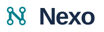
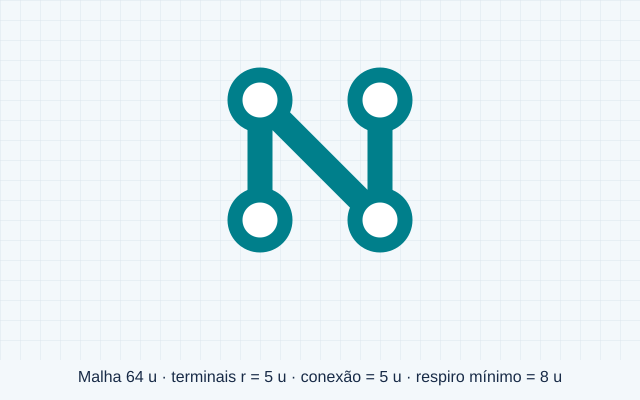
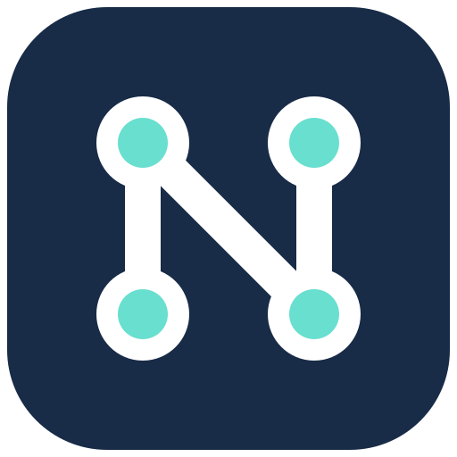
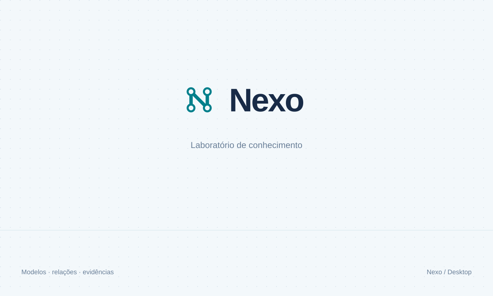

IDENTIDADE VISUAL / 01 · 2026Conhecimento em conexão.
Uma identidade técnica e discreta para um laboratório de modelos, relações e evidências. Quatro terminais ligados formam a letra N; o símbolo permanece legível na barra de tarefas e dentro da área de trabalho.
01 / Assinaturas
SVGs com fundo transparente. Versões horizontal, vertical e símbolo isolado disponíveis na pasta logos.
02 / Cor e hierarquia
ink#182b47
teal#007f8b
mint#68dfcf
paper#f3f8fb
blue#1687ef
green#00865b
purple#8955e8
amber#e97816
Azul profundo estrutura a interface; verde petróleo identifica ações e a marca. Azul, verde, violeta e âmbar distinguem tipos do grafo. Cor acompanha texto ou ícone e não substitui o estado da verificação.
03 / Construção e tipografia

Segoe UI para a marca e a interface. Cascadia Code ou Consolas para identificadores. Não distribuir as fontes do Windows. Os textos dos SVGs continuam editáveis e dependem da fonte; PNGs fixam a aparência exportada.
Respiro: 8 unidades ao redor da área de 64. Marca horizontal a partir de 102 px de largura; símbolo isolado a partir de 16 px usando a variante simplificada. Não esticar, girar, adicionar sombras ou trocar as cores dos terminais isoladamente.
04 / Aplicativo e ferramentas

Windows · ICO multirresolução16, 20, 24, 32, 40, 48, 64, 128 e 256 px. PNGs até 1024 px. Versão simplificada para tamanhos pequenos.
Ferramentas: Lucide, traço 1,75 em malha 24. Usar 16–20 px nas barras compactas, 24 px nos seletores. Licença em icons/LICENSE-Lucide. O catálogo inclui ícones para uso futuro e não representa funcionalidades já implementadas.
05 / Abertura

Splash claro e escuro em SVG e PNG 1200 × 720. Na aplicação, a abertura acompanha o carregamento real, sem atraso artificial ou porcentagem inventada.